As machine learning artificial intelligence applications become more widespread in use, the impacts of a biased dataset on user’s real-world experiences are increasingly becoming evident. Some studies on certain models have displayed an exacerbation of biases already present within the training dataset, an occurrence that could be potentially harmful to users of these models. This work investigates the potential for similar patterns of behaviour in image translation, specifically Pix2Pix by attempting to examine how this model responds to specific distributions of shape and colour, and relate this to biased real-world datasets. This research finds inconclusive evidence that Pix2Pix either reduces or exacerbates biases in the learned data, and indicates some next-step trials to be attempted in future.
This project investigates the way a biased dataset may affect the output of Pix2Pix [1] through abstractions of scenarios using shapes and colours. This project aims to create similar experiments to those by Zhao, Ren, Yuan, Song, Goodman, & Ermon in the paper Bias and Generalisation in Deep Generative Models: An Empirical Study (2018) [4], using image translation with Pix2Pix. The intent is that these findings may eventually be used to predict the outcomes to real-life scenarios of biases in potential machine learning applications, and to examine whether Pix2Pix reduces, reinforces or exacerbates biases present in the dataset.
This concept was based on the work of Zhao, Ren, Yuan, Song, Goodman, & Ermon in the paper Bias and Generalisation in Deep Generative Models: An Empirical Study (2018) [4], which explores whether certain models generalise, and also what they generate in response to biased datasets containing a specific number of shapes (E.g., a dataset of images containing just one randomly placed circle generates single circles, vs a dataset of images with 6 circles generates varying numbers of circles distributed around the 6 mark, with a bias to over-estimate). Another paper informing this project is by Zhao, J., Wang, T., Yatskar, M., Ordonez, V., & Chang, K.-W, called Men Also Like Shopping: Reducing Gender Bias Amplification using Corpus-level Constraints (2017) [5], which found that training on MS-COCO for multi-label object classification amplified bias from an already gender-biased dataset.
Datasets were comprised of images of 10 two-dimensional shapes (either circles and/or squares) in either blue or orange. Each experiment followed different rules for the distributions of the shapes and colours. A focus was put on the distributions of 50/50 and 70/30.
These datasets were generated using P5.js scripts to automate the process, allowing preliminary experiments to have a dataset of 200 images, and later experiments to have a dataset of 1000 images.
Later experiments were used to count the generated distribution of shape/colour, counting any shape that had a combination of both colours as whichever colour dominated most. 30 of the first pieces of test data were counted in this process in all cases. Percentage distributions of the generated data were found by averaging out the distributions in these first 30 results.
The first four experiments were comprised of smaller datasets of 200 images. Experiments 1 and 2 focussed on determining whether the computer was able to emulate distributions of different colours, using a 50/50 and 70/30 distribution of blue and orange circles (respectively) in a set layout of two rows of 5. Both these experiments resulted in mode collapse (generating the same or similar results regardless of input), and the 70/30 also experienced an issue with not being able to fill all the circles with a single colour. These experiments were inconclusive due to these issues, and were addressed in the next set of experiments.
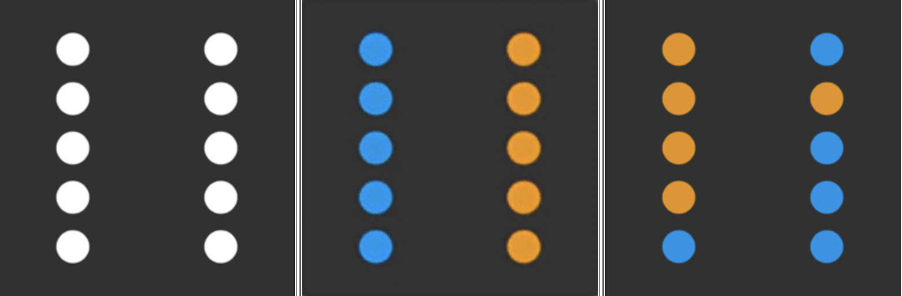Sample Results: Left to right: Input, Output, Test Data 50/50 distribution Experiment 1
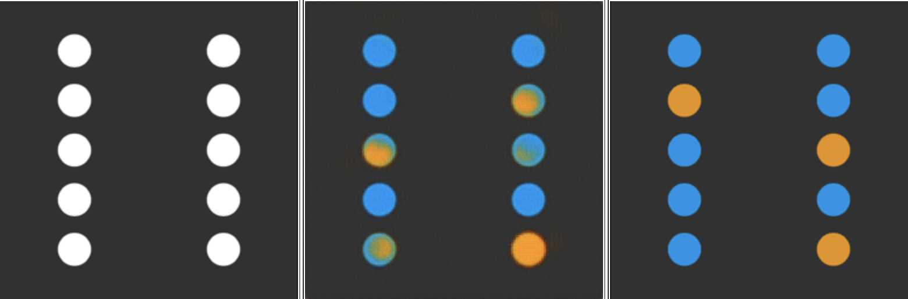Sample Results: Left to right: Input, Output, Test Data 70/30 distribution Experiment 2
With experiments 3 and 4, the same distributions were used, this time with blue squares and orange circles, thereby adding in the shape variable. These tests showed that the trained model was easily able to pick up on and follow certain rules, as it did not create a cross-over of blue circles or orange squares (something that did not exist in the dataset). This was important to establish before testing how Pix2Pix would react to being trained on different distributions of all four combinations of shape and colour. If Pix2Pix was producing shape/colour combinations that did not exist in the training dataset on this level, the outcome of more advanced tests could be compromised.
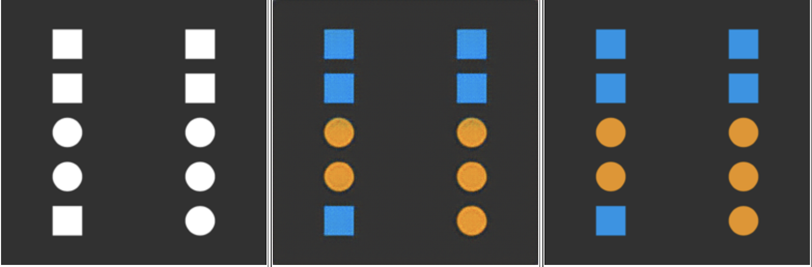Sample Results: Left to right: Input, Output, Test Data 50/50 distribution Experiment 3
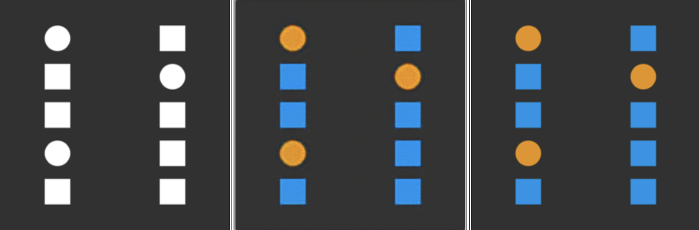Sample Results: Left to right: Input, Output, Test Data 70/30 distribution Experiment 4
In the next experiments, the mode collapse was fixed by randomising the shape placement. The 50/50 and 70/30 distributions of circles were again trained with a dataset of 200 (experiments 5 and 6).
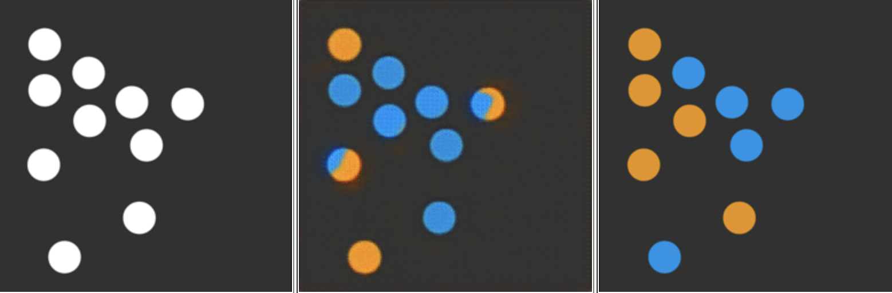Sample Results: Left to right: Input, Output, Test Data 50/50 distribution Experiment 5
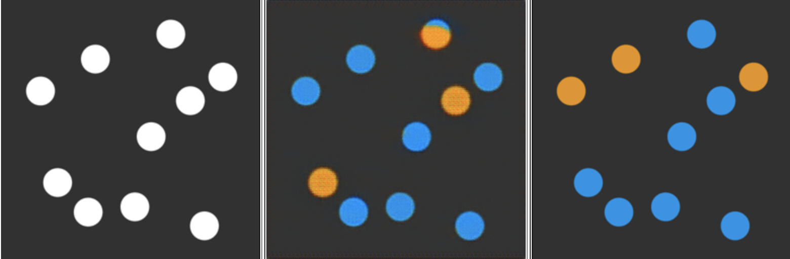Sample Results: Left to right: Input, Output, Test Data 70/30 distribution Experiment 6
These results still displayed circles that were filled by both colours occasionally, so the test was also carried out with a dataset of 1000 for each distribution to try improve the machine's understanding of how a shape should be coloured (Experiments 7 and 8).
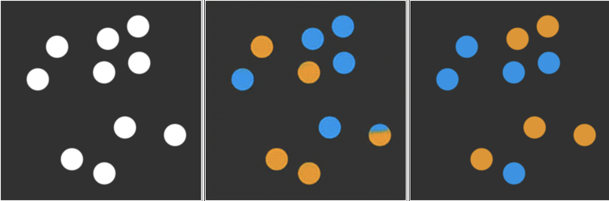Sample Results: Left to right: Input, Output, Test Data 50/50 distribution Experiment 7
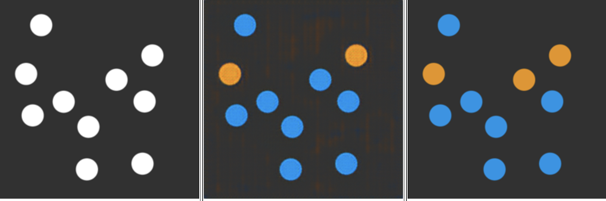Sample Results: Left to right: Input, Output, Test Data 70/30 distribution Experiment 8
While the 50/50 distribution in experiment 7 still had half-coloured circles, the 70/30 distribution in experiment 8 appeared to be consistently filling each circle with a single colour. This was considered a success. From here, the data from experiment 8’s first 30 training data and generated data were compared by histogram to evaluate how Pix2Pix interprets the dataset's bias
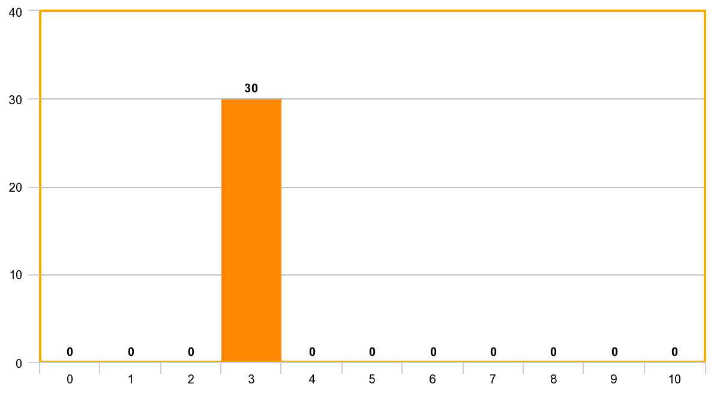 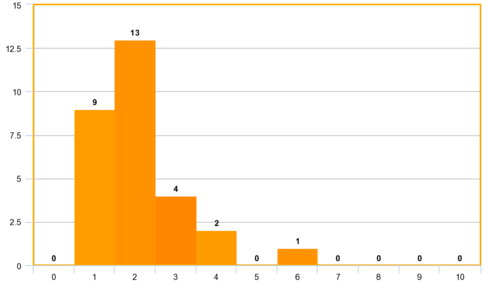Top: Distribution of orange in input data for experiment 8 Bottom: Distribution of orange in generated data for experiment 8
These results had an average orange distribution of 20%, down from the training set of 30%. This shows that in this experiment, Pix2Pix was more likely to under-represent the minority group, exacerbating the bias present in the training dataset.
For the next experiments, a "coin toss" method was used for the distribution of circles, to create a more life-like training dataset. Each circle had a 30% likelihood of being either blue or orange . This meant that each individual image could have varying numbers of orange and blue, but overall the average percentages across all training images should be approximately 70/30.
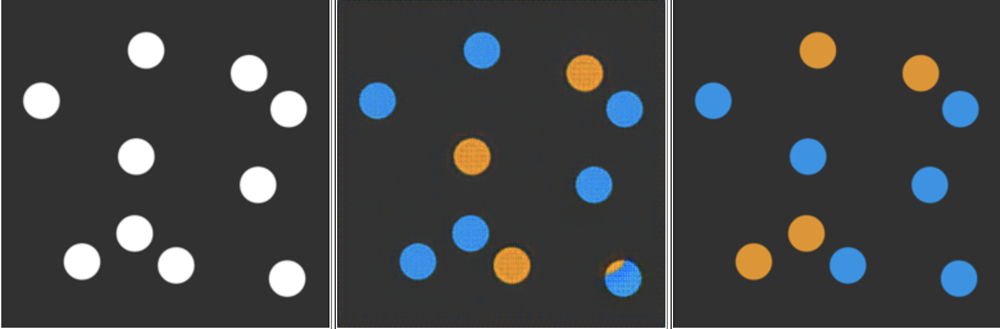Sample Results: Left to right: Input, Output, Test Data 70/30 distribution Experiment 9
This experiment’s first 30 training and test data distributions were also gathered and compared by histogram below:
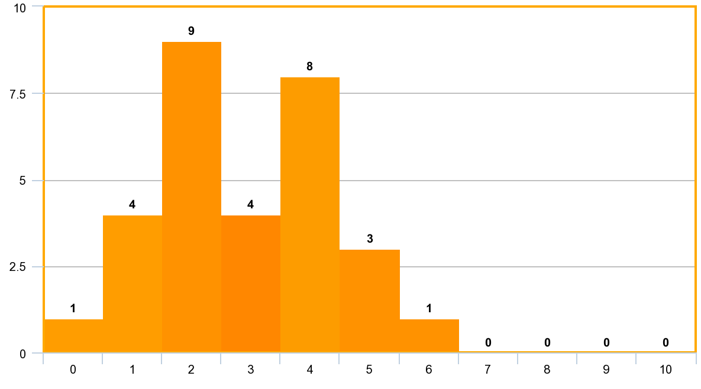 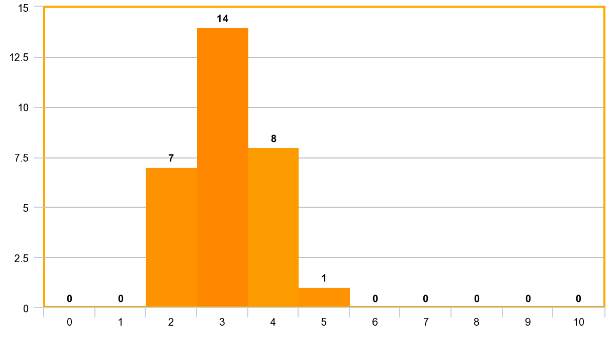Top: Distribution of orange in input data for experiment 9 Bottom: Distribution of orange in generated data for experiment 9
These results had an average orange distribution of 31%, slightly up from the training distribution of 29%. This shows that in this experiment Pix2Pix seemed to somewhat replicate the bias – while the number increased by 2%, it is close enough that with this small of a sample size and only one trial, it cannot be confirmed that Pix2Pix would generally increase the minority group numbers. A counting of more than 30 training and test data in several similar trials would end up with more conclusive results.
As a final experiment, combinations of shape and colour were used to represent real-life datasets. In both experiments blue was used to represent male and orange to represent female.
In experiment 10, data was taken from the World Economic Forum’s Global Gender Gap Report 2018 [3]. In this Experiment, square indicated an Artificial Intelligence professional without machine learning skill, and circle indicated an artificial intelligence professional who did had skills in machine learning. In experiment 11, a similar approach was taken using the numbers of women and men smiling and not smiling in the celebA dataset, described in Tom White's Sampling Generative Networks (2016) [2].
Both these datasets had to be significantly rounded to the nearest ten in order to be applied to a set of 10 dots, so these results are not accurate to the dataset, but future tests could be created with more than 10 shapes if these datasets needed to be represented accurately.
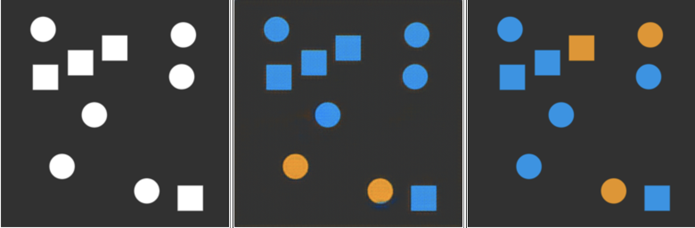Left to right: Input, Output, Test Data Machine Learning skills, Experiment 10
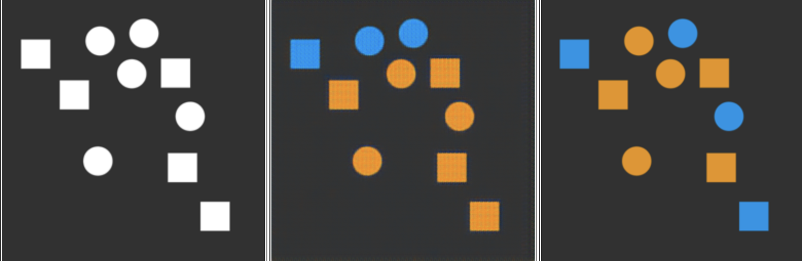Left to right: Input, Output, Test Data Smiling/Not Smiling, Experiment 11
Experiment 10 Average Distributions
| Male (Blue) | Female (Orange) | |
|---|---|---|
| Circle (No Machine Learning) | 40% | 20% |
| Square (Machine Learning) | 30% | 10% |
Experiment 10 Average Generated Distributions
| Male (Blue) | Female (Orange) | |
|---|---|---|
| Circle (No Machine Learning) | 36% | 22.66% |
| Square (Machine Learning) | 25.33% | 16% |
Experiment 11 Input Distributions
| Male (Blue) | Female (Orange) | |
|---|---|---|
| Circle (Smiling) | 20% | 30% |
| Square (Not Smiling) | 20% | 30% |
Experiment 11 Average Generated Distributions
| Male (Blue) | Female (Orange) | |
|---|---|---|
| Circle (Smiling) | 16% | 34% |
| Square (Not Smiling) | 14.43% | 35.66% |
These results were interesting but definitely need future expansion – Experiment 10 seems to reduce the bias, however experiment 11 seems to exacarbate it. In one, the minority was orange, and in the other the minority was blue. This could indicate that somehow certain colours or shapes are likelier than others to be reduced in number, which would need further testing. However perhaps with an increased sample size of generated data being recorded, or several more attempts at mirroring the same distributions, different results may occur.
Overall, this research has shown a tendency for Pix2Pix to understand and replicate certain rule patterns such as distributions of 70/30 to a general degree, however it is so far inconclusive as to whether Pix2Pix has any tendency to reduce or exacerbate biases from the training dataset.
Future experiments need to be done addressing the possible colour impacts (possibly by re-training the final experiments with the colours and shapes reversed) and preferably also counting a larger sample of generated and training data.
[1] Isola, P., Zhu, J.-Y., Zhou, T., & Efros, A. A. (2016). Image- to-Image Translation with Conditional Adversarial Networks. ArXiv. Retrieved from http://arxiv.org/abs/1611.07004
[2] White, T. (2016). Sampling Generative Networks. ArXiv. Retrieved from http://arxiv.org/abs/1609.04468
[3] World Economic Forum. (2018). The Global Gender Gap Index 2018. Retrieved from http://www3.weforum.org/docs/WEF_GGGR_2018.pdf
[4] Zhao, S., Ren, H., Yuan, A., Song, J., Goodman, N., & Ermon, S. (2018). Bias and Generalization in Deep Generative Models: An Empirical Study. ArXiv. Retrieved from http://arxiv.org/abs/1811.03259
[5] Zhao, J., Wang, T., Yatskar, M., Ordonez, V., & Chang, K.- W. (2017). Men Also Like Shopping: Reducing Gender Bias Amplification using Corpus-level Constraints. Proceedings of the 2017 Conference on Empirical Methods in Natural Language Processing, 2979–2989. https://doi.org/10.18653/v1/D17-1323